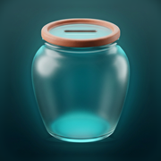

ثبّت مطمورتي على الشاشة الرئيسية
بتشتغل متل أي تطبيق، وبدون إنترنت. التثبيت من Safari ببلاش وبياخد ثواني.
-
اضغط زر ••• تحت الشاشة
-
اختر مشاركة
-
انزل لتحت واضغط إضافة إلى الشاشة الرئيسية
-
خلّي فتح كتطبيق ويب مفعّل، واضغط إضافة
-
افتح مطمورتي من أيقونتها على الشاشة
-
اضغط زر المشاركة تحت الشاشة
-
انزل لتحت واضغط إضافة إلى الشاشة الرئيسية
-
اضغط إضافة فوق الشاشة
-
افتح مطمورتي من أيقونتها على الشاشة
اضغط زر المشاركة جنب العنوان فوق الشاشة
اختر إضافة إلى الشاشة الرئيسية، ثم إضافة
افتح مطمورتي من أيقونتها على الشاشة
هالصفحة مفتوحة جوّا تطبيق تاني، ومن هون ما بينفع التثبيت.
اضغط ••• أو زر المشاركة واختر فتح في Safari، أو انسخ الرابط والصقه بـ Safari:
khaderhash.github.io/matmurti
مطمورتي بتحتاج iOS 16.4 أو أحدث.
حدّث الآيفون من الإعدادات ← عام ← تحديث البرنامج، ورجاع افتح هالرابط.
ما لقيت «إضافة إلى الشاشة الرئيسية»؟ افتح الرابط بتطبيق Safari نفسه، مو من جوّا تطبيق تاني.